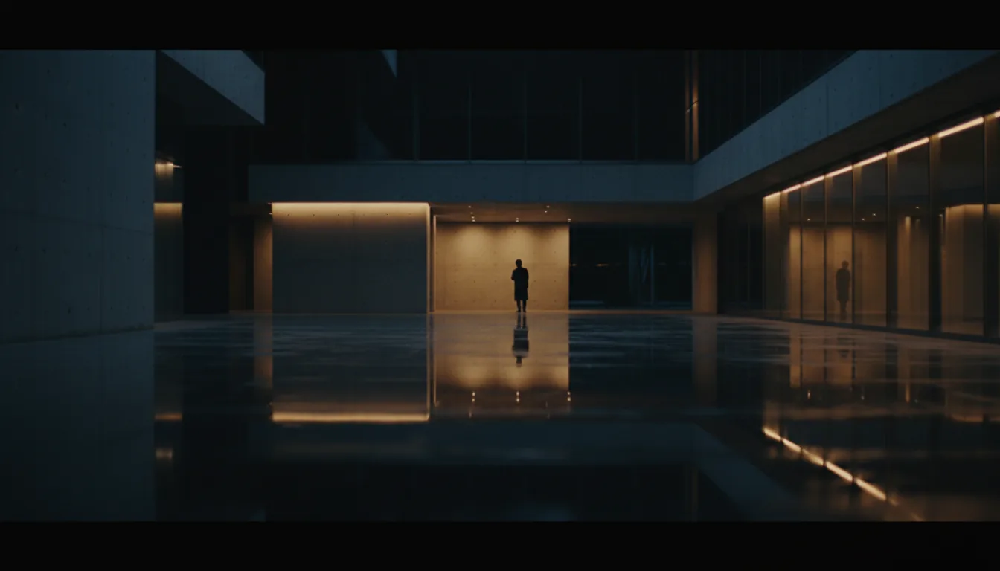

01 CONCEPT / DEMOAfter the Rain
BRAND FILM / 16:9
AIで速く。
人の感性で、深く。
CM、PR、SNS映像。
生成するだけで終わらせない、演出から仕上げまで。
FAST IS NOT
THE FINISH.
生成の速さだけでは、広告は残らない。
企画・演出・編集まで、人の意思でフレームを決める。
01 / SELECTED WORKS
作品の空気、速度、余韻まで設計する。ここでは公開前のため、すべてコンセプトデモとして表示しています。

01 CONCEPT / DEMOBRAND FILM / 16:9
02 / POINT OF VIEW
速く作れることは、ゴールじゃない。
何を見せ、何を残し、どこで心を動かすか。BitFrameはAIを制作工程に取り込みながら、最後まで人のディレクションで映像を組み立てます。
03 / SERVICES
01
店舗・商品・サービスのCM映像
15s — 60s02
企業・ブランドの世界観を伝える映像
WEB / EVENT03
Instagram・TikTokなど縦型広告クリエイティブ
9:16 / 1:104
生成画像・生成動画を活用したコンセプト表現
IMAGE / MOTION04 / PROCESS
目的・ターゲット・媒体を整理
企画・構成・トーンを設計
AI生成・素材制作・必要な撮影
編集・音・色・尺を仕上げる
用途に合わせた形式で納品
映像の相談、企画段階からどうぞ。
まだ輪郭が決まっていなくても大丈夫です。
現在のBitFrameお問い合わせフォームへ移動します。